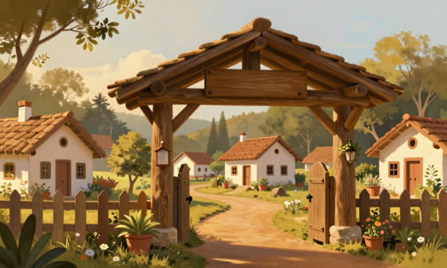
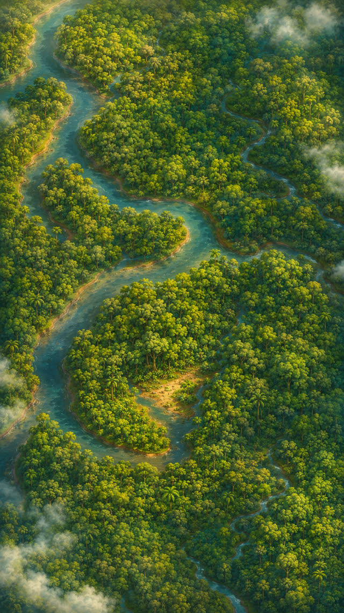

O jogo brasileiro de cuidar e colecionar
Bichinhos da fauna e do folclore do Brasil nascem de ovos na Ilha Brazukka — e precisam de você.
Os primeiros da lista recebem chaves de teste beta.
Capítulo 1 · A escolha
Tudo começa num ovo.
Sua jornada de colecionador começa escolhendo um entre três ovos — sem saber quem vem. E a Ilha guarda tantos outros… alguns lendários.
👆 Toque num ovo pra chocar

? ? ?
toque pra chocar 🥚

? ? ?
toque pra chocar 🥚

? ? ?
toque pra chocar 🥚

? ? ?
segredo…
Capítulo 2 · O cuidado
Eles são vivos.
Come, toma banho, treina, dança — e o anel de bem-estar responde a cada cuidado. Experimenta:
No jogo, ele lembra de quem cuida 💚
Capítulo 3 · A coleção
Monte seu álbum.
Comece com três. A Ilha Brazukka esconde mais de 10 espécies — e algumas lendárias ✨

Capioca
capivara · Pantanal
A companhia mais tranquila da Ilha.

Arará
arara-azul · Mata
Voa sempre em casal.

Douro
mico-leão · Mata Atlântica
O tesouro dourado da floresta.
…e o álbum não termina aí.
Capítulo 4 · A Ilha
A ilha Brazukka.
Existe uma ilha com a forma do Brasil. Cada canto esconde ovos diferentes — e os humanos estão chegando agora.
Mas nem tudo que vive nela é bicho…


— cenas de dentro do jogo: a sua chegada na Ilha —
Capítulo 5 · As lendas
O folclore é o coração da Ilha.
No fundo da mata vive alguém que assobia entre as árvores e protege os bichos. Os antigos a chamam de Caipora — a primeira das lendas. Busque as pistas:

🌀 ？ ？ ？
🐾 ？ ？ ？
🍯 ？ ？ ？
Ela está perto. Dizem que só quem cuida muito bem é digno de encontrá-la…
…e ela não é a única lenda. Nas noites de festa, um tambor ecoa do outro lado da Ilha 🥁